Welcome to RAM Agro Pty Ltd. RMA Agro Processing is a dedicated agricultural enterprise that collaborates directly with local farmers to cultivate and deliver the highest quality seasonal vegetables and fruits. With a commitment to sustainability, community support, and premium produce. RMA Agro has established itself as a trusted name in the agricultural sector.

Why RMA agro?
Mission
RMA Agro is driven by a mission to foster mutually beneficial relationships with local farmers, promote sustainable farming practices, and provide consumers with fresh, nutritious, and ethically sourced produce.
Partnerships
RMA Agro values its partnerships with local farmers, working hand in hand to support their livelihoods while promoting environmentally friendly farming practices. By fostering strong relationships with farmers, RMA Agro ensures a reliable supply chain and maintains the integrity of its products from farm to table.
Sustainability
Environmental stewardship is at the core of RMA Agro's operations. The company is committed to sustainable farming methods that minimize environmental impact, conserve natural resources, and promote biodiversity. By prioritizing sustainability, we strive to contribute positively to the health of the planet and future generations.
Quality Assurance
At RMA Agro, quality is paramount. Stringent quality control measures are implemented at every stage of production, from seed selection to harvesting and packaging. By maintaining uncompromising standards of quality assurance, we ensure that the produce consistently meet or exceed customer expectations.
Community Engangement
RMA Agro actively engages with the local community, participating in outreach programs, educational initiatives, and agricultural development projects. By supporting community initiatives, we seek to create lasting social impact and foster a sense of solidarity within the communities it serves.
Invest
Bangladesh is known for its diverse and fertile agricultural land with a tropical climate. Bangladesh is blessed with fertile alluvial soil. This soil is highly conducive to agriculture and supports the cultivation of a wide variety of crops. Perfectly suitable for the productions of a variety of crops, fruits & vegetables, fisheries, livestock. A promising Agro and food processing industries, which plays a vital role in the country's economy and food security.

Why Invest in Us?
Investing in RMA Agro Pty Ltd offers investors the opportunity to participate in an agricultural enterprise that maximizes efficiency, quality, and sustainability from farm to market. our capabilities in supplying seasonal vegetables tailored to your specific requirements. With a network of dedicated contract farmers throughout Bangladesh. By working directly with farmers, implementing rigorous quality control measures, and maintaining modern infrastructure for sorting, packaging, storage, transportation, and distribution, RMA Agro is poised for growth and profitability in the agriculture sector. advanced agricultural practices, and a commitment to quality and sustainability, we are well-positioned to meet your demands for premium produce year-round.
Key Investment Drivers:
Direct Farmer Engangement
Our extensive network of contract farmers spans key agricultural regions in Bangladesh. These farmers are committed to adhering to our rigorous quality standards and cultivation practices, ensuring consistent supply and superior product quality. RMA Agro differentiates itself by establishing direct relationships with local farmers, ensuring fair compensation and fostering collaboration throughout the production process. This direct engagement minimizes intermediaries, enhances transparency, and strengthens the supply chain, ultimately reducing costs and improving margins.
Customized Vegetables Supply
We understand that every customer has unique needs and preferences. Whether you require specific varieties, quantities, or packaging options, we can tailor our vegetable supply to meet your exact specifications, providing you with flexibility and convenience.
Quality Assurance
At RMA Agro, quality is paramount. We employ stringent quality control measures at every stage of production, from seed selection and cultivation to harvesting, sorting, and packaging. Our commitment to quality assurance ensures that only the freshest and finest vegetables reach your doorstep.
Reliable Supply Chain
With our dedicated contract farmers and efficient logistics network, you can count on a consistent and reliable supply of seasonal vegetables, even during peak demand periods.
Customized Solutions
With our dedicated contract farmers and efficient logistics network, you can count on a consistent and reliable supply of seasonal vegetables, even during peak demand periods.
Sustainability
By partnering with RMA Agro, you support sustainable farming practices that promote environmental stewardship, community development, and food security in Bangladesh.
Exceptional Service
Our team is dedicated to providing exceptional customer service, prompt communication, and proactive support to ensure a seamless and positive experience for our valued partners.


Our Products
RMA Agro Pty Ltd is excited to unveil its upcoming product line, featuring a selection of essential consumer goods including cold-pressed edible oils, frozen potato chips, natural Sea salt, additive-free tomato sauce, and more. As we prepare for the official release date, our commitment remains unwavering: to deliver 100% natural agricultural products crafted with care and integrity. Stay tuned for updates on the launch of our new line as we strive to bring quality and sustainability to your everyday essentials.

